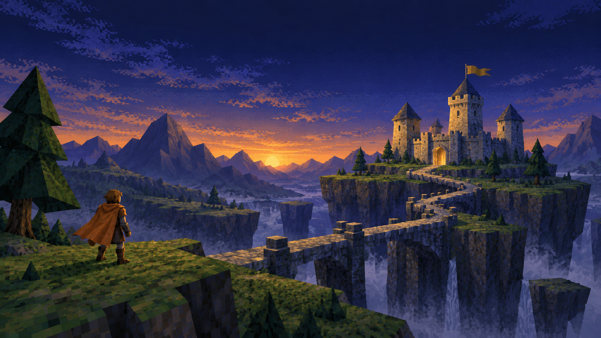

READY TO PLAY
Build the Redis parser
45 min planned · Programming
START SESSION →
45 / 120 min today · Selecting a task won’t start the clock.

45 min planned · Programming
45 / 120 min today · Selecting a task won’t start the clock.
READY TO
CONTINUE?
45 min planned · Programming
45 min planned · Programming